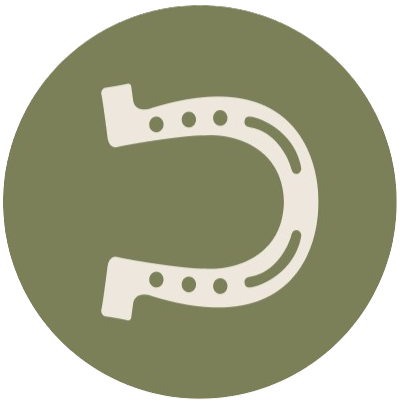

KMETIJA S
KONJI


Poleg tega vzrejamo in šolamo konje, ponujamo oskrbo za lastniške konje ter kakovostno konjsko prehrano. Na voljo je tudi najem prostora za dogodke in treninge. Vabljeni, da postanete del naše zgodbe.